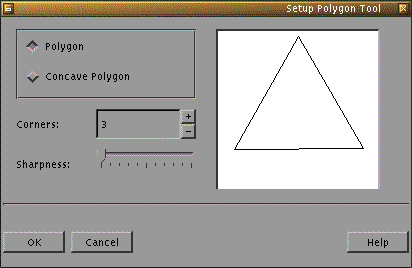
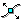
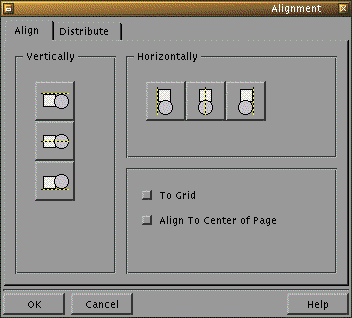
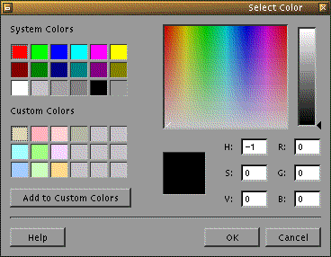

next previous table of contents
3. Usage
3.1 Some general remarks
The operation of KIllustrator is intuitive and easy
to learn. It is very similar to other graphical programs.
KIllustrator uses
key bindings which are
KDE standards.
Additionally pressing the CTRL key while moving the mouse constrains the movement to one
in one direction or in equal amounts in both directions. For example, pressing the CTRL key while
drawing a rectangle, draws a square.
3.2 Drawing 2D-Primitives
The procedure to draw any 2D-Primitive,
consists of the following steps:
- Select the type of object which can be drawn
- Draw the object
The second step varies with each of the different 2D-Primitives.
Therefore these are dealt with separately in the following where
the operation is shown with the icon button to be pressed to select that function.
3.2.1 Freehand tool
 In order to dar a freehand line, one proceeds as follows:
In order to dar a freehand line, one proceeds as follows:
- left-click (and hold) on the canvas where the freehand line is to begin
- draw the line by moving the mouse with the left mouse button still pressed
- release the left mouse button when the final point of the line is reached
3.2.2 Polyline tool
With this tool lines, polylines, and polygons may be drawn.
3.2.2.1 Lines
To draw a line:
- left-click on the canvas at the point where the line is to start
- release the left mouse button and draw the line by moving the mouse
- right-click on the canvas at the point where the line is to finish.
3.2.2.2 Polylines
A polyline is a series of connected lines.
In order to draw a polyline, proceed as follows:
- left-click at the point where the polyline is to start
- release the left mouse button and draw the first line
- left-click at the point where the current line ends and the next line starts
- release the left mouse button and draw the next line
- continue with previous two steps until the final line is drawn, then terminate
this line with a click of the right mouse button
3.2.2.3 Polygons
To draw a polygon follow the steps in drawing polylines. To close the polygon
hold down the SHIFT key while clicking the right mouse button to automatically
close the polygon. A line from the last left-click to the first left click is automatically drawn.
3.2.3 Bezier curve tool
Drawing Bezier curves is often a problem,
however KIllustrator makes it easy. Proceed as follows:
- left-click on the canvas at the point of origin of the Bezier curve
- determine the rise of the curve segment at this point with
the help line - left-click when satisfied
- left-click at the end point of this line segment
- position the help line to achieve the desired rise, if further curve segments
are to be drawn, left-click
otherwise right-click to complete the curve
3.2.4 Rectangle tool
 In order to draw a rectangle:
In order to draw a rectangle:
- left-click (and hold) on the canvas at the point where a corner point of the rectangle is to be
- draw the rectangle by moving the mouse while holding down the left mouse button
- release the left mouse button to complete the rectangle
To draw a square, press and hold down the CTRL key while drawing the rectangle.
3.2.5 Regular polygon tool
This tool allows the simple drawing of equilateral triangles, squares, and higher order
regular polygons. It is much simpler to use this tool for drawing regular polygons than
the polyline tool. The
procedure here is the following:
- left-double click on the regular polygon tool button
- a dialog opens where the polygon parementers are set

- make the appropriate adjustments
- left-click the OK button when finished
- left-click (and hold) on the canvas at the point of origin *
- scale the polygon to the desired size by moving the mouse while holding
down the left mouse button
- release the left mouse button when the desired size is acheived
* In this case the point of origin should only be used as a guide. Fore precise
alignment of the polygon use the selection tool.
3.2.6 Ellipse tool
In order to draw an ellipse, proceed
as follows:
- left-click (and hold) on one corner point of the bounding box * of the ellipse
- draw the ellipse by moving the mouse while holding down the left mouse button
- release the left mouse button when the ellipse is the desired size
If a circle is to be drawn instead of an ellipse, hold the CTRL key down while
drawing the ellipse.
* The bounding box of the ellipse is a rectangle which is just big enough to
contain the ellipse - the edges of the rectangle are
tangents (parallel to the x- and y-axes) of the ellipse.
3.2.7 Text tool
This tool adds text to your KIllustrator drawing. The steps are are follows:
- left-click on the canvas where the text is to begin
- type the text
The input is continued until a new tool is selected, or a new point on the canvas
is chosen to place more text by step 1.
3.3 Transformation of 2D-Primitives
KIllustrator offers tools that allow the easy modification of drawn primitives, such as
scaling, rotating, and shifting tools. This section describes how to perform these
transformations.
3.3.1 Rotation
Rotation here describes the rotation of an object about a centre point. Proceed as follows:
- left-click on the object to be rotated. The selection frame appears around the object.
Left-click again and the transformation frame appears.
- left-click (and hold) over one of the corner arrows and rotate the opject by moving the
mouse while holding down the left mouse button.
- release the mouse button
3.3.2 Scaling
Scaling an object allows the user to increase or reduce the size of an object.
To scale an object:
- left-click on the object to be scaled---the selection frame appears.
- left-click (and hold) on a point in the selection frame in the direction the object
is to be scaled.
- scale the object by moving the mouse with the left button held down.
- release the mouse button.
Proportional scaling can be done by holding down the CTRL key in the third step.
3.3.3 Shifting
To shift an object proceed as follows:
- left-click on the object to be shifted
- with the left mouse button pressed move the mouse to reposition the object
- release the left mouse button
3.3.4 Modifying an object
In the previous sections the transformations of whole objects were presented. We now turn our
attention to the manipulation of individual sections of objects.
NOTE: Before the object can be modified the object must be selected using the selection tool.
3.3.4.1 Moving points

For shifting individual points in a object:
- left-click (and hold) on the point to be shifted
- with the left mouse button held move the mouse to reposition the point
- release the mouse button
3.3.4.2 Adding points
This tool adds control points to an object.
To add a point left-click on the object at the point where the new control point is
desired.
3.3.4.3 Removing points
 With this tool one can delete control points from an object---simply left-click on the
point to be deleted.
With this tool one can delete control points from an object---simply left-click on the
point to be deleted.
3.3.4.4 Filling objects
To fill an object with a colour select the object and left-click on the desired colour in
the colour palette.
If the required colour is not in the palette or a pattern fill is required, proceed as
follows:
- select the object to be filled.
- right-click on the object---a popup menu appears.
- select the "Properties" menu entry.
- select the "Fill" tab in the dialog.
- choose to fill with a solid colour, a pattern, or a gradient colour.
NOTE: Remember to choose a colour by clicking the coloured buttons in the dialog else
it might appear that there is no fill.
3.4 Positioning objects
KIllustrator offers many ways to assist in the positioning of objects.
3.4.1 Grid
The grid is an aid allowing the user to work on a drawing precisely. Grid behaviour
can be controlled by three functions (parentheses show the menu entries used to access
the fuctions):
- Show Grid (View -> Show Grid), show the grid in the drawing.
- Align to Grid (Layout -> Align to Grid), objects now snap to the grid.
- Grid setup (Layout -> Grid), setup the grid.
The first and second functions can be performed during the setup of the grid distances
by toggeling the buttons in the Grid Setup dialog.
3.4.2 Helplines
Helplines provide a further mechanism to the Grid when precise drawing is required. The
advantage of using helplines is that the distance between individual helplines can be varied.
The proceedure for Helpline use is identical to the Grid.
3.4.3 Aligning objects
This function allows objects to be aligned with respect to each other and/or the page. For
example a group of objects can be aligned such that their left edges are all in line or
such that they are evenly distributed throughout the page.
Select the object(s) to be Aligned and right-click, select "Align" from the menu and the
following dialog appears:

NOTE: At the time of writing not all functionality of "Align" has
been implemented. It is hoped that further functionality will be added soon.
3.4.4 Aligning text along a path
If the path is already drawn, then one proceeds as follows:
- select the text to be aligned
- choose "Text along Path" from the arrange menu
- select the object to be used as the path with a left-click (the right mouse button cancels).
The following objects can be used as paths:
3.4.5 Grouping objects
Individual objects can be grouped together. This is useful of one wants to assemble complex
drawings from individual objects and then treat these compound objects as one object. Objects
are grouped as follows
- select the objects to be grouped. Multiple objects can be selected by enclosing them
inside a selection box by using the selection tool and/or selecting objects while
holding down the SHIFT key.
- choose "Group" from the "Arrange" menu.
A grouped object can be separated into it's constituent objects by selecting the group and
choosing "Ungroup" from the "Arrange" menu.
3.5 The Layer Concep
3.5.1 What are layers?
Layers may be thought of as sheets of transparent paper with different pieces of the
overall drawing on each. Together the layers form the overall drawing, but each layer
may be edited independantly of the others. Layers are controlled via the Layers dialog
(View -> Layers...). Each layer has three characteristics represented by the eye, pen, and
printer icons respectively:
- Visable: allows the in/visable.
- Editable: determines whether changes may be made to the layer.
- printable: allows the layer to be printed.
3.5.2 Working with layers
3.6 handling files
3.6.1 Saving drawings
3.6.2 Loading drawings
3.6.3 Importing and exporting drawings
3.6.4 Printing
3.7 Undo / Redo
Previous operations in the drawing can be undone easily by using "Undo" from the "Edit" menu.
If the undone step is then wanted again in the drawing this can be acheived by using "Redo".
KIllustrator remembers all steps made to a drawing from when it was started. One should
consider, however, that Undo and Redo steps work on operations in the order in which they
were performed on the drawing.
3.8 Zoom tool
Zooming can be performed in two ways. The simplest is to use the drop down box in the main
bar to select the required magnification level whose default value is 100%. The second
method is to use the magnifying glass in the tool bar. Left-clicking on the canvas with the
zoom tool increases the magnification to the next level.
The magnification levels are:
- 50%
- 100%
- 150%
- 200%
- 400%
- 600%
- 800%
- 1000%
3.9 Handling colours
The colour handling process in KIllustrator is very simple. Generally, a left-click on a
colour in the colour palette changes the fill colour of the selected object(s); a right-click
changes the outline colour (or the text colour) of the selected object(s).
If the desired colour is not in the colour palette, then proceed as follows:
- select the object whose colour is to be changed.
- right-click on the object and choose "Properties" from the menu.
- choose to change the fill colour or the outline colour from the dialog.
- press the colour button and the following dialog is displayed:

- left-click in the multi-coloured window and select the desired colour by moving the mouse.
- release the left mouse button.
- left-click (and hold) on the small triangle next to the shaded-grey window to the right of the
multi-coloured window.
- select the desired brightness by moving the mouse up and down.
- release the left mouse button.
- the colour may be saved in the Custom Colour palette by clicking in one of the custom colour
squares and pressing the Add to Custom Colors button (this is optional).
- press OK.
Alternatively HSV and RGB values can be entered directly into the dialog by clicking in the
appropriate field, typing the value, then pressing the ENTER key.
3.10 Changing the standard paremeters
3.10.1 Global parameters
3.10.1.1 Page layout
3.10.1.2 Units
3.10.2 Default drawing parameters
Default drawing parameters such as fill colour, line thickness and style can be set by
changing parameters with no object selected. These parameters will be saved and used next
time KIllustrator is started.
next previous table of contents